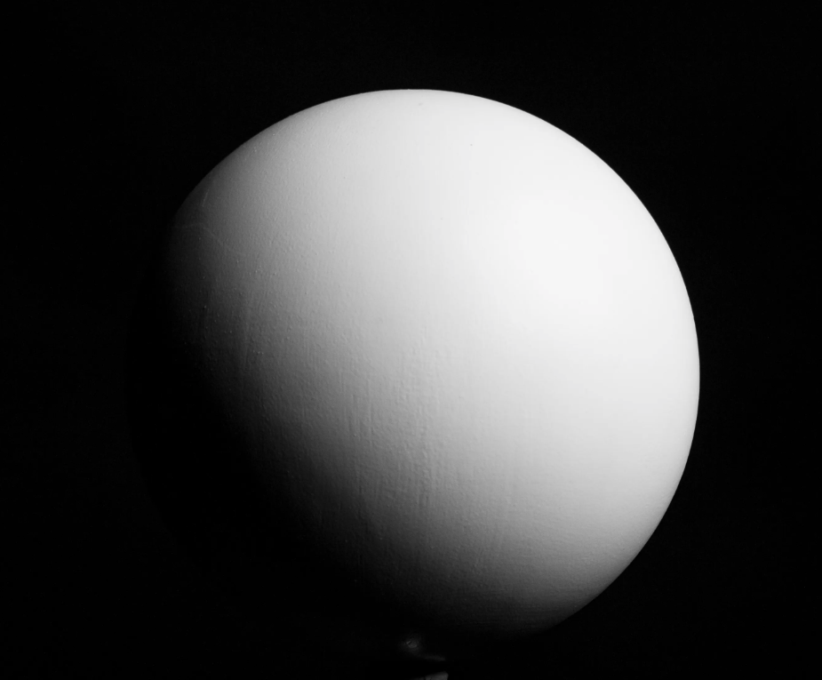

Il y avait rien a comprendre, il y avait un noeud à parcourir.
Un serpent de mer qui tire la langue.
Je serai toujours à l'intersection en fait, toujours au centre du Y.
J'ai le vertige face à toutes ces possibilités.
Je saisis le sens du Poème, traverse plutot que de rester planté là.
Irai-je dans le nouveau monde libre, celui de la vision claire où les choses sont bien ce qu'elles sont ?
Ou Irai-je dans le monde du plaisir malsain et aliénant, fait de projection et basé sur l'espoir ?
Un rire moqueur de paranoia résonne...
